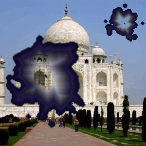

Figure 17.283. Example for the “Stain” filter

Original image

“Stain” applied with the gradient “Cold Steel 2”
This filter adds stains to the image.
Every stain is created in a layer of its own. The stain layers are randomly moved to let the stains spread out (at the end you may see the boundary of the moved top layer). So after applying the filter you can easily edit (e.g., move, scale, remove) the stains, or create additional stains using the filter again.
![[Note]](images/note.png)
|
Note |
|---|---|
|
If the image is in grayscale mode or indexed mode, this menu entry is disabled. |

- Number of stains to add
-
The number of stains (1-10).
- Darken only
-
Since every stain is created in a layer of its own, all layers have to be merged to make the appearance of the image. If this option is checked, the relevant layer mode is set to “Darken only”, otherwise it is set to “Normal”.
The layer mode determines how the pixels of the layers are combined. If “Darken only” is unchecked we use “Normal” mode, and every stain covers the pixels of the layers below. If “Darken only” is checked, stains cover the corresponding pixels of the layers below them only if these pixels are lighter.
- Gradient to color stains
-
The gradient that is used for created stains.